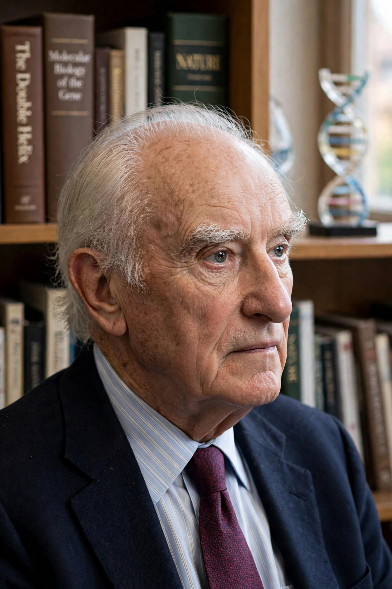

[Image placeholder: Francis Crick in later life]| Born | 8 June 1916, Weston Favell, Northamptonshire, England |
|---|---|
| Died | 28 July 2004 (aged 88), San Diego, California, US |
| Education | University College London; University of Cambridge (PhD) |
| Known for | Co-discovery of the structure of DNA; central dogma of molecular biology; consciousness research |
| Awards | Nobel Prize in Physiology or Medicine (1962) |
| Fields | Physics, molecular biology, neuroscience |
| Institutions | Cavendish Laboratory; Salk Institute |
**Francis Harry Compton Crick** (8 June 1916 – 28 July 2004) was an English molecular biologist, biophysicist and neuroscientist. He is best known for proposing, with James Watson, the double-helix structure of DNA in 1953, drawing on X-ray diffraction data including the work of Rosalind Franklin and Maurice Wilkins. He, Watson and Wilkins shared the 1962 Nobel Prize in Physiology or Medicine.
Crick later formulated the central dogma of molecular biology, proposed the adaptor hypothesis and the wobble hypothesis for the genetic code, and spent his later career at the Salk Institute in California working on the neuroscience of consciousness.
Crick studied physics at University College London and began a PhD at Cambridge before the Second World War interrupted his studies. During the war he worked for the Admiralty on magnetic and acoustic naval mines. Afterwards, influenced by Erwin Schrödinger's book What Is Life?, he moved into biology at Cambridge's Cavendish Laboratory.
At the Cavendish, Crick met the American biologist James Watson in 1951. Building molecular models and using X-ray crystallographic evidence from King's College London — including Franklin's 'Photo 51' — they published the double-helix structure of DNA in Nature in April 1953, one of the most famous papers in science. Crick completed his PhD the same year.
Crick worked on how DNA sequence specifies protein sequence, co-authoring the 1961 experiment demonstrating the triplet nature of the genetic code. In 1976 he moved to the Salk Institute in La Jolla, turning to neuroscience and the problem of visual consciousness, summarised in his 1994 book The Astonishing Hypothesis. He died of colon cancer in 2004.